疫情下的芬蘭旅遊 (三)：開往聖誕村的驚悚列車，下一站，羅瓦涅米 Rovaniemi
眼看著列車即將抵達目的地，卻因為突如其來的意外可能下不了車…心想一個人得跟著列車繼續往北開到北極圈的荒郊野外、且人煙稀少的小鎮
聖誕列車 … 驚魂記?
就在目送阿北離開後，我們的列車也悄悄抵達 Tikkurila 車站。剛走出車站外極大的溫差，瞬間讓我了解到原來凍僵與熱到脫褲子原來只有一扇自動門的距離。
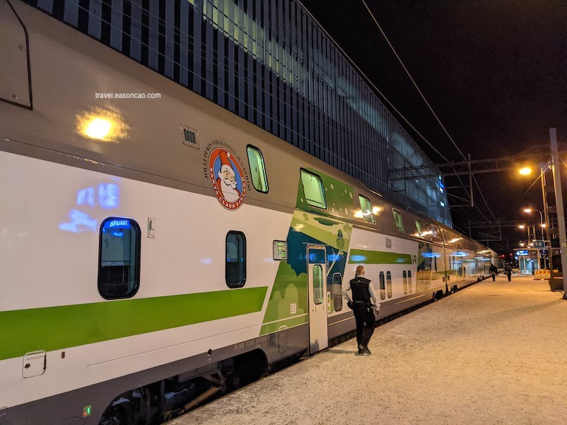
搭上 VR 列車前往聖誕村 (Santa Claus Village) 的夜班臥鋪列車，不禁瞬間讓人勾起當兵那段糟糕的體驗。但沒想到格外的舒適且乾淨，真實體驗過後比軍中的臥鋪好睡：
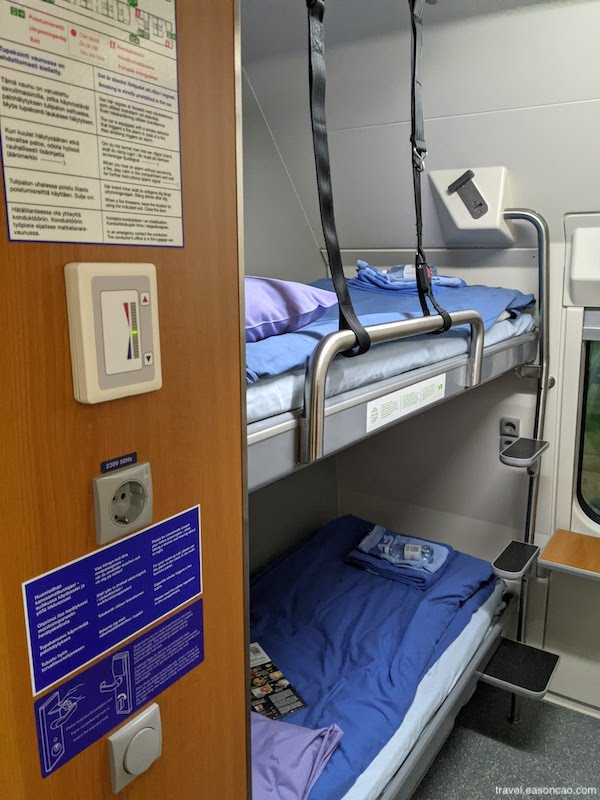
最酷的事情莫過於 VR 臥鋪列車還可以在列車上洗澡，而且浴室十分整潔：
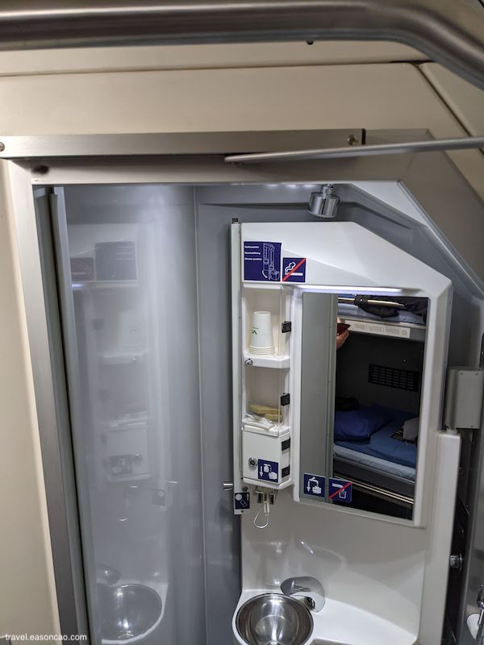
順帶一提，VR 長途列車上是有 Wi-Fi 的：
而且沒想到列車上的網路很順暢，節省了我很多漫遊的頻寬。
就這樣不知不覺一路睡到天明，即將到站的前 20 分鐘，我就拿著自己房間 201-202 的房卡想說走去餐廳看看有什麼吃的。
就在閒晃返回房間、列車即將到站之際，我走到 201-202 的房門前，摸了摸口袋，插入我的房卡。意外的是，周遭的空氣安靜得不像話。
奇怪，怎麽帶出來的門卡不能用。
於是我狂敲猛敲，但都沒人應門
難道隔音這麼好！？
眼看著即將抵達目的地，但怎麼敲、怎麼傳訊息、怎麼打電話或是想盡各種辦法，我都沒有得到任何房間內其他同行友人的回應。如果當時的焦慮能夠用一項東西具象化，此刻大概只有一團打結的耳機線能夠形容我內心的慌亂。
此時，我的心裏已經列舉了各種因為行李沒拿，一個人得跟著列車繼續往北開到北極圈的荒郊野外、且人煙稀少的小鎮。心中同時盤算著整趟旅遊的計畫，要臨時變成野外求生的各種可能性。
我就像是在遊樂園迷了路的小孩找不到媽媽，心裡已經涼了一半 (只不過我找的不是媽媽，是列車長)。帶著我的門卡及懺悔的心，滿腦子想著準備各種怎麼跟列車長告解說我把自己反鎖在外面的荒謬情節。
就在尋找列車長，並且在列車抵達 Rovaniemi 的前 1 分鐘，我看著走道旁有著斗大的號碼一直遞減，我才意識到 …
原來我走錯車廂了…
原來我走錯車廂了…
原來我走錯車廂了…
於是我就循著號碼在如同迷宮和無限重複的場景中，順利的回到我的房間。而且 ….
這站是這班列車的終點站
一瞬間，剛剛的各種驚濤駭浪和心臟快停的那種慌張，成了自己心裡的的笑話，大概可以自嘲很久。
Rovaniemi
一下列車，我瞬間感受到滿滿的聖誕過節氣氛和歡樂的小朋友。放眼望去都是整片的白色渲染著森林、建築和平面，所落之處覆蓋著每平方公分。
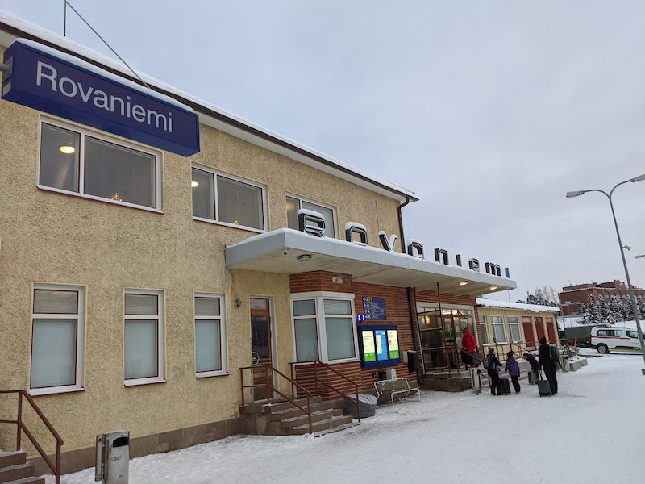
看著小鎮裡居民滑著雪橇快速地移動和不帶雪鍊的車陣，看著所有東西都結凍、覆蓋成一層白雪，像是在冷凍庫裡遊行，走在街上有一種很特別的體驗。
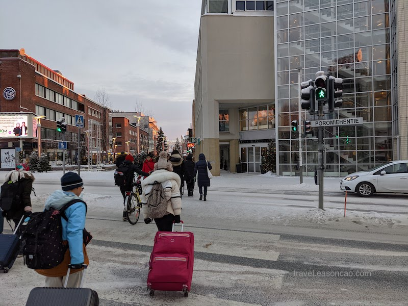
即使溫度只有負 9 攝氏度，但是可以感受到一同出遊遊客內心的澎湃足夠炙熱：
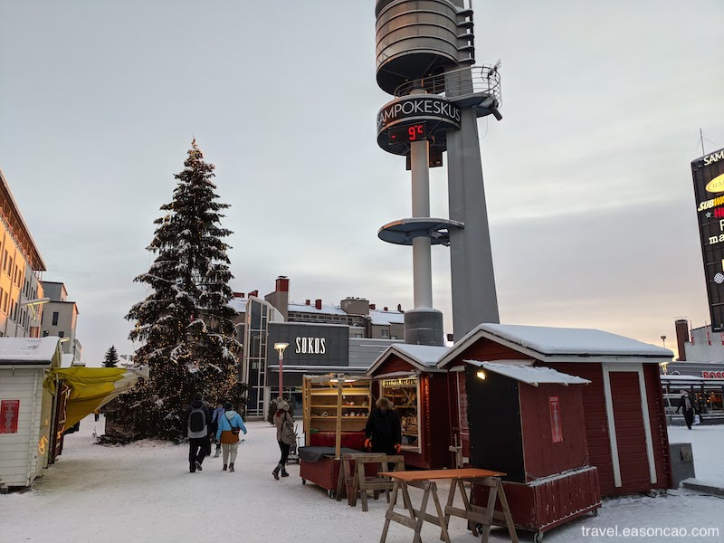
但再怎麼興奮，肚子還是會餓。於是我們一群人就打開 Google Map 隨便找了附近的餐廳，還沒進門，首先吸引我們的不是食物，而是夢幻的玻璃球戶外用餐區：
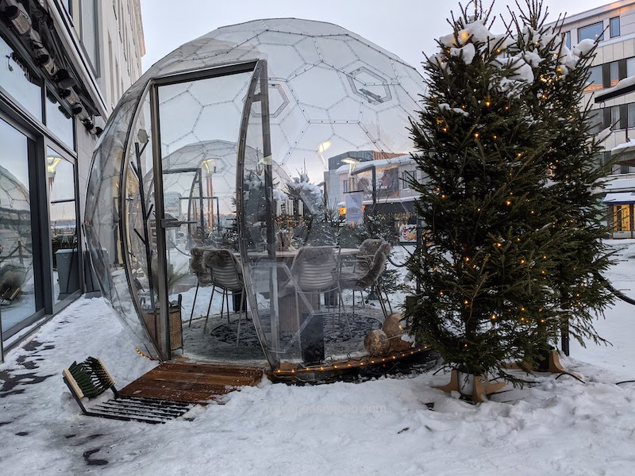
問了服務生才知道那個玻璃球的位子需要低消 €200 歐元以上，不過要晚餐時段才開放。但即使不是坐在浮誇的用餐區，餐廳的用餐氛圍也十分舒服，餐點也非常美味，如果下次再來 Rovaniemi，我會願意再度光顧。
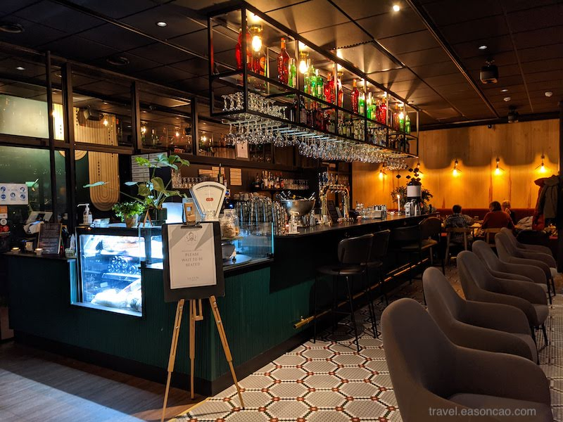
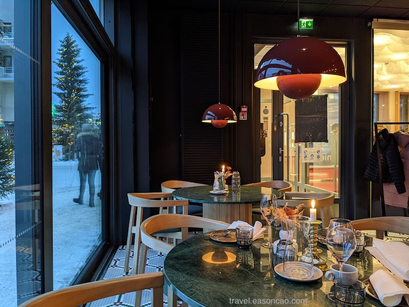
醉翁之意不在酒，就讓我們看看食物吧：
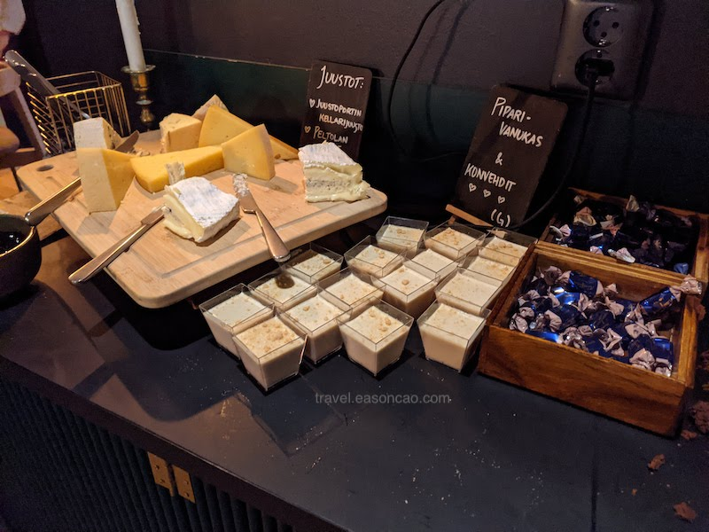
幸運的是我們去的時間點餐廳剛好有聖誕活動，午餐時段有直接提供 €32 歐的 buffet，獲得一堆起司跟生鮭魚。
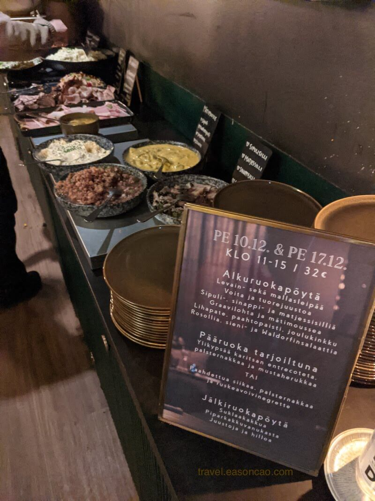
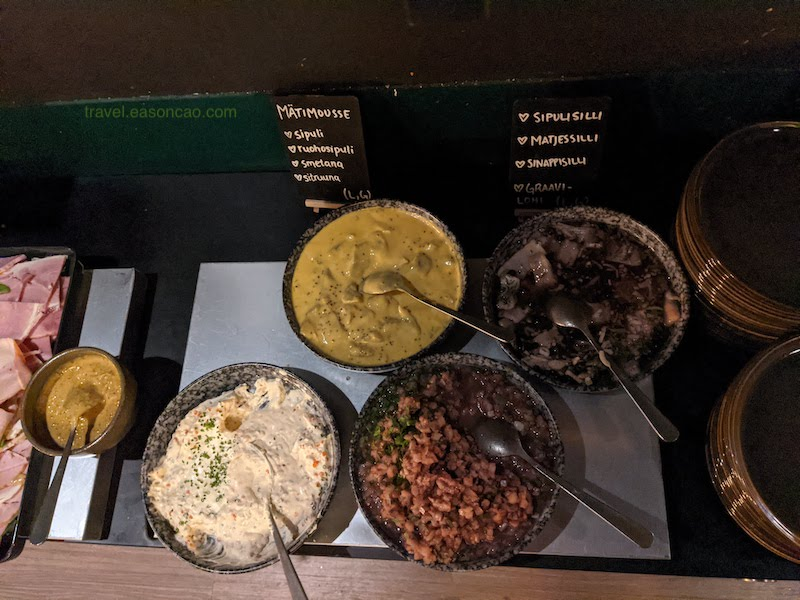
主餐也是非常厲害，這份羊排只有入口即化可以形容：
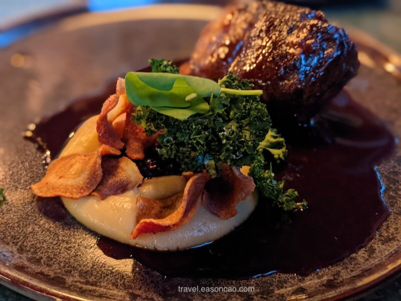
唯一的衝突感是冬天接近北極圈的日照時間超！級！短！我們剛到大概上午 11 點太陽就要下山了，到下午平常還在吃午餐的時間，天色卻早已漸暗，有一種不知道是在吃午餐還是晚餐的錯覺。不過，到了晚上商店和街上絢麗的燈光卻也點綴了單調的雪白，到處充斥了各種顏色：
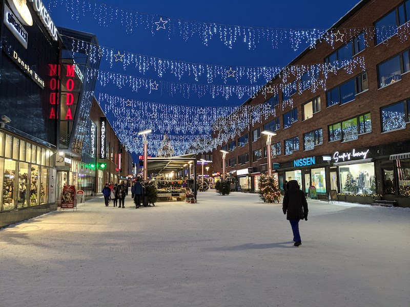
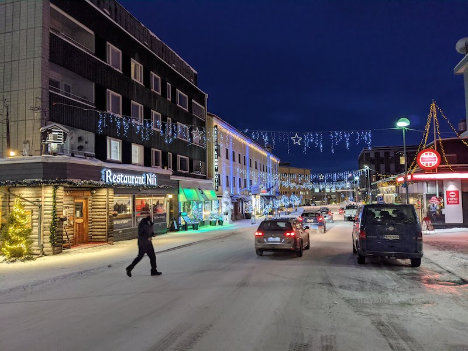
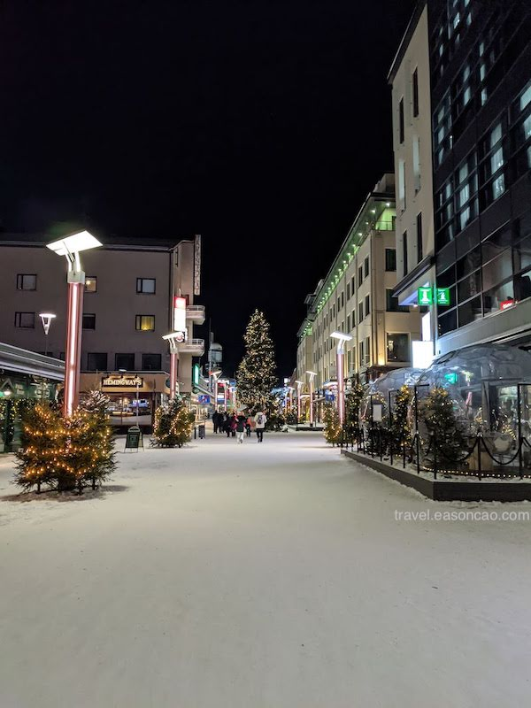
在結冰的河邊還有一顆超大的聖誕樹：
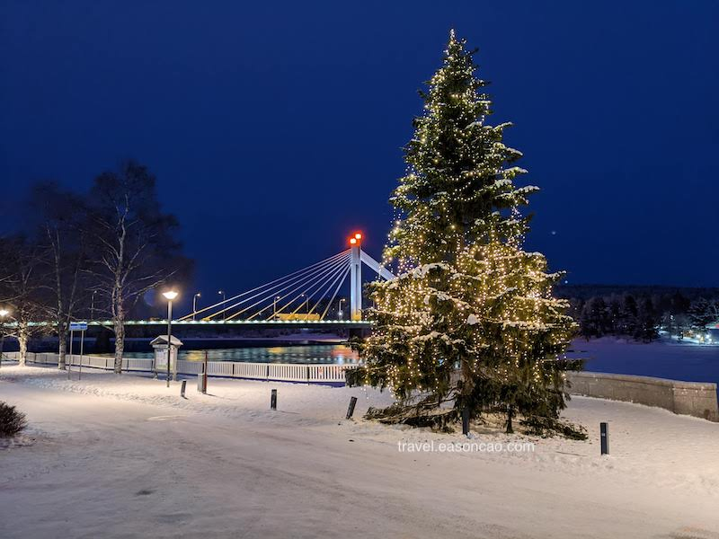
唯一要注意的是，走在路上要小心的大概就是各種被朋友偷襲的可能，因為路上都是現成的雪塊，只要一個一言不合隨時可以發起攻擊。
在 Rovaniemi 晚上跟著 Nordic Unique Travels 抱著想看極光的心情，隨著在地人的步伐驅車到距離 Rovaniemi 北邊有一段距離的私房地點。
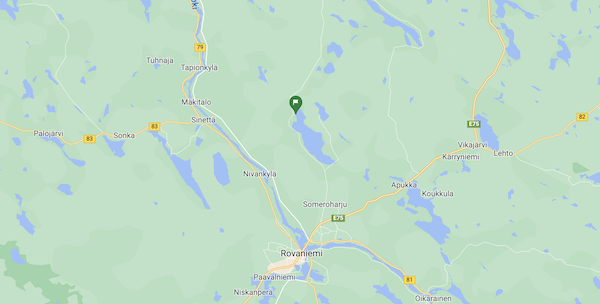
可惜晚上多雲偶飄雪，錯過了看極光的最佳天氣狀況。不過，我在這體驗到了人生中的第一次超級傳統的 Finnish Sauna，柴火不夠還可以自己添的那種。在炭火燒熱的石塊上淋上一瓢水，瞬間產生大量的蒸氣佈滿整室：
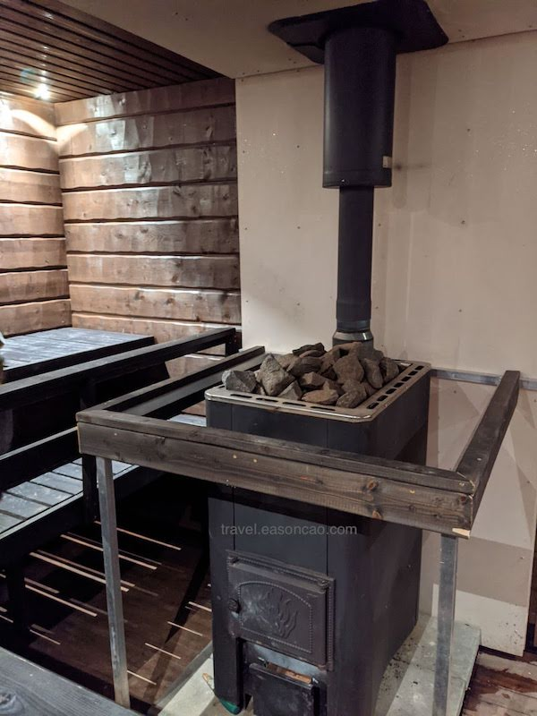
想要認真的體驗一次芬蘭桑拿，只需要在一陣憨熱後，全身脫光在零下負 10 度的溫度跑出去，跳進結冰的湖裡再回來，絕對是人生中美好的體驗之一。
什麼？你說快冷死了？
Don’t worry, you will be fine.
這是我在跳進湖裡前聽到的回答，真的很芬蘭。
但也因為室外冰冷的溫度，圍在火堆旁吃著燒烤格外溫暖，讓人感覺在陰冷的黑暗中感到充滿希望。總覺得芬蘭當地的木材燒出來火焰的顏色特別鮮明、空氣中更是瀰漫著一股濃郁但不刺鼻的木炭香味。
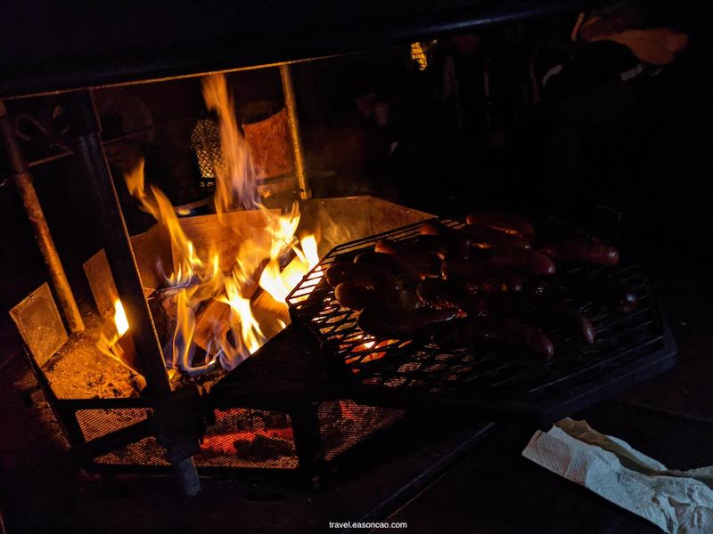
來到這片森林陌生的旅客們，就在嘴巴可以呼出熱氣的熱果汁和烤肉腸中，伴隨著停不下的咀嚼聲，以及人們在寒冷的雪地中圍著火堆聊天此起彼落的音色交織。
天氣雖然冷，但我們也很 Chill。小朋友和大人們邊烤著棉花糖聽著彼此的故事，為荒蕪的森林夜晚點燃歡笑，直到火堆剩餘零星的餘燼才散去。只是那味道如同附著在棉花糖表面的焦糖般，令人回味無窮。